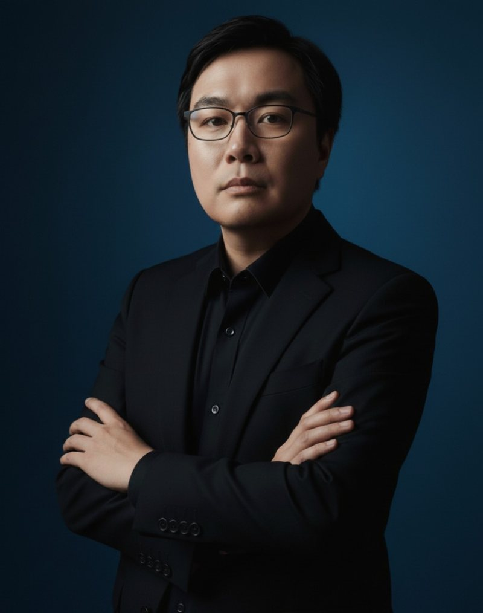

◆
Enterprise AI Architecture
Target-state architecture, reference patterns, integration, scalability, security, cost and operational resilience.
SYS.ONLINE // PETALING JAYA, MY
> Senior AI Architect_
Enterprise AI architect and transformation leader with 20+ years turning board-level priorities into secure, scalable AI across Azure, Google Cloud, Microsoft Fabric and agentic AI ecosystems.

“A lifelong learner and growth seeker with a passion for AI.”
Leads strategy through production, connecting board-level priorities with secure, scalable architectures. Trusted by senior stakeholders to shape AI roadmaps, define governance and ROI, lead regional teams, and convert complex operational challenges into measurable business outcomes.
Target-state architecture, reference patterns, integration, scalability, security, cost and operational resilience.
RAG, copilots, multi-agent orchestration, prompt and model governance, evaluation and human oversight.
Use-case prioritisation, roadmap design, KPI and ROI definition, PoC-to-production scaling and adoption.
Azure AI Foundry, Microsoft Fabric, Azure ML, Vertex AI, BigQuery, Power BI, APIs, Docker and DevOps.
Data lake foundations built with the data team, workflow automation and RPA, APIs and integration patterns that turn enterprise data into AI use cases.
Board and C-suite advisory, regional team leadership, partner alignment, governance, risk and change management.
Fraser & Neave Holdings
AXA Partners
Petronas Digital
MISC Berhad (Petronas subsidiary)
Avanade & Accenture
Supply-chain BI and ETL, incl. a Beijing assignment for spare-parts order tracking and lead-time analysis.
Supported Shell's reservoir management platform with SharePoint and BI.
Helped establish the Cyberjaya shared services centre; integrations for GlobalFoundries and ATI transitions.
DRAG TO ROTATE
Python, XGBoost, LightGBM, TensorFlow, Keras, OpenCV, Azure ML, Azure AI Foundry, Vertex AI, LangChain, RAG, agentic AI, document intelligence, computer vision, Microsoft 365 & GitHub Copilot, Gemini, ChatGPT, agent skills
Microsoft Fabric, Power BI, SQL, BigQuery, SAP BW, SSIS, SSAS, Power Query
Azure, Google Cloud, Docker, APIs, Git, Azure DevOps, CI/CD, C#, .NET
Power Automate, RPA, Talend data lake ingestion (SAP ECC & IBP data, with the data team), enterprise search, OCR
HELP University · CGPA 3.67/4.00
Research in AI-driven investment decision-makingUniversiti Malaya · CGPA 4.00/4.00
Asia Pacific University & Staffordshire University
Dual-degree programmeUniversiti Tunku Abdul Rahman
Tunku Abdul Rahman College
Sentiment analysis and Bursa Malaysia market trend prediction.
Co-author & technical contributor. Associated with the Southeast Asia Outstanding Paper Award.
DOI ↗Lead author. Opportunities and Risks in AI for Business Development.
DOI ↗Lead author.
DOI ↗Lead author. Strategies and Opportunities for Technology in the Metaverse World.
DOI ↗Co-author. Strategies and Opportunities for Technology in the Metaverse World.
DOI ↗Tunku Abdul Rahman University of Management and Technology · Jul 2023 — Present
Teaches Business Intelligence, Business Analytics for Finance and master's-level Supply Chain Analytics — designing curricula, assignments and practical labs with Python, Power BI and real supply-chain data.
Chairman, Casa Damansara 1 (Jun 2024 — May 2026) — governance, finances, vendor contracts and long-term property planning.
Volunteer mentor & coach, FutureLab.my (2018 — 2021) — data science, AI, DevOps and career development.
OPEN CHANNEL
Enterprise AI strategy, agentic AI, data platforms or speaking and teaching engagements.